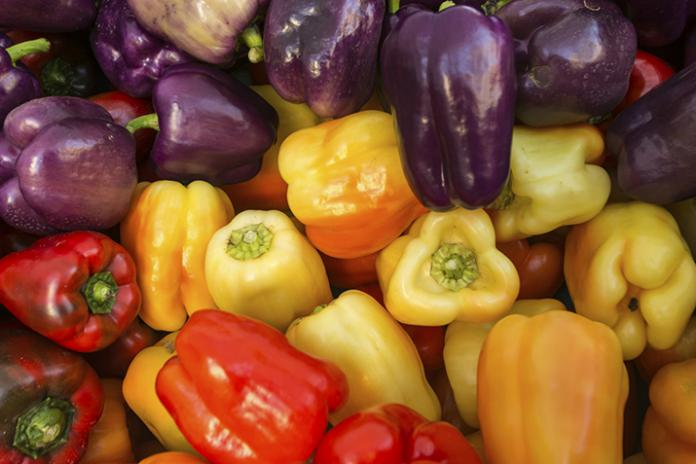

Bell Pepper Care

Sunlight
When to Plant
- Always start indoors in seed trays at 70-90 degrees F.
- Move to small pots once sprouts are a few inches tall
- Plant outdoors once nighttime temps are 50 deg F or higher.
Early Summer or later if needed.
Planting Recommendations
- ensure soil is well draining.
- Space 1-2 feet apart. If planting in pots, use a 18-24 in pot
Soil
- pH: 6.2-6.8 for best nutrient absorption
- Mix in 3-4 inches of compost
Water
- Water regurlarly. At least an inch of moisture per week
- If soil is dry, it's time to water
Learn More
Click Here!